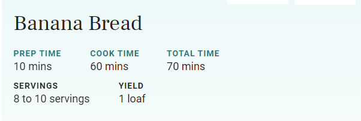

Banana Bread Recipe

Why this recipe?
The beauty of this banana bread recipe is you don't need a fancy mixer! A mixing bowl, a fork to whisk the eggs, and a sturdy spoon to mix the batter are all you need. The sugar amount is flexible. The original recipe called for a cup of white sugar, but most people, including me, do just fine with 3/4 cup, and many are happy with 1/2 cup.
You can toss in a cup of chopped nuts, raisins, or chocolate chips if you want, or put the batter into muffin tins and make banana nut muffins instead. You can even go a step further and make chocolate banana bread.
Ingredients
This recipe calls for an 8- x 4-inch loaf pan, which produces a tall loaf. The recipe will also work in an 8 1/2- x 4 1/2-inch loaf pan, producing a slightly shorter bread. Since the pan is a bit larger, the bake time is shorter: 47 to 57 minutes. A 9- x 5-inch pan will yield an especially short but still delicious bread; bake for 45 to 55 minutes.
2 to 3 medium (7" to 7-7/8" long) very ripe bananas, peeled (about 1 1/4 to 1 1/2 cups mashed)

1/3 cup (76g) butter, unsalted or salted, melted
1/2 teaspoon baking soda (not baking powder)
1 pinch salt
3/4 cup (150g) sugar (1/2 cup if you would like it less sweet, 1 cup if more sweet)
1 large egg, beaten
1 teaspoon vanilla extract
1 1/2 cups (205g) all-purpose flour
Steps
Preheat the oven and prepare the pan:
Preheat the oven to 350°F (175°C), and butter an 8 x 4-inch loaf pan.
Mash the bananas and add the butter:
In a mixing bowl, mash the ripe bananas with a fork until completely smooth. Stir the melted butter into the mashed bananas.
Mix in the remaining ingredients:
Mix in the baking soda and salt. Stir in the sugar, beaten egg, and vanilla extract. Mix in the flour.
Bake the bread:
Pour the batter into your prepared loaf panBake for 55 to 65 minutes at 350°F (175°C), or until a toothpick or wooden skewer inserted into the center comes out clean. A few dry crumbs are okay; streaks of wet batter are not. If the outside of the loaf is browned but the center is still wet, loosely tent the loaf with foil and continue baking until the loaf is fully baked.
Cool and serve:
Remove from oven and let cool in the pan for a few minutes. Then remove the banana bread from the pan and let cool completely before serving. Slice and serve. (A bread knife helps to make slices that aren't crumbly.)
Wrapped well, the banana bread will keep at room temperature for 4 days. For longer storage, refrigerate the loaf up to 5 days, or freeze it.
Source:
This recipe is courtesy of Elise Bauer
If you like this recipe or have any questions, please email me.